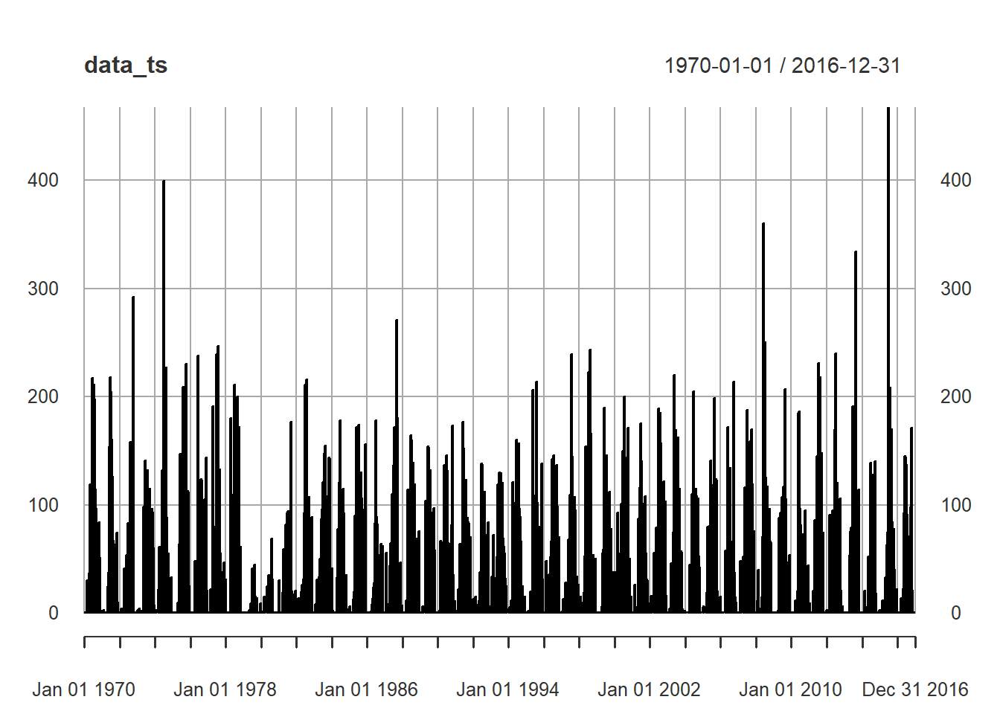
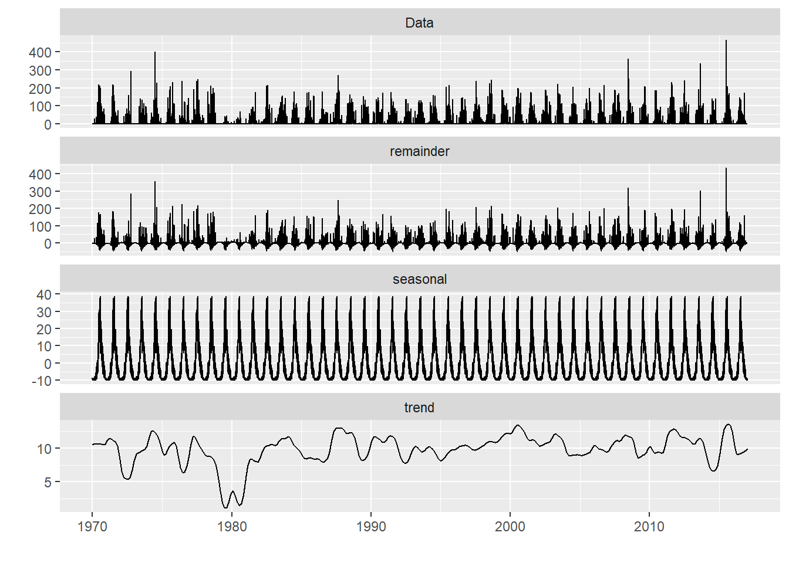
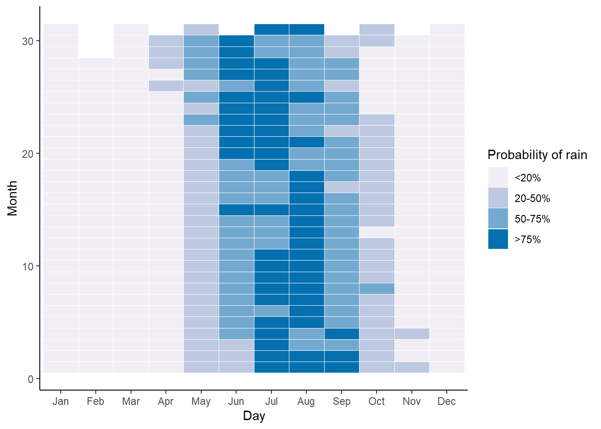
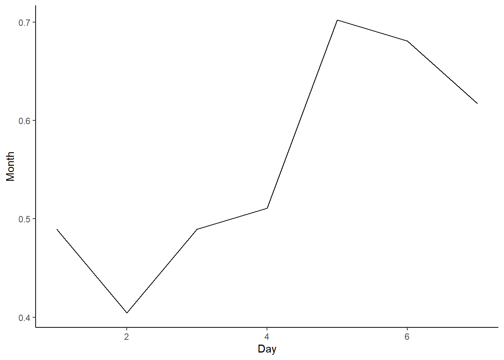

When planning for construction work, rainfall become a very crucial factor. Data is easily available with month averages but more insights into historical data may be beneficial. I gathered data from Cox Bazaar weather station and did some analysis.
Data gathering
Analysis of daily rainy precipitation recorded at Cox’s Bazar weather station, 1970 to 2016. Data source.
Code
#https://www.kaggle.com/datasets/redikod/historical-rainfall-data-in-bangladesh?resource=download#https://towardsdatascience.com/rainfall-time-series-analysis-and-forecasting-87a29316494elibrary(rbokeh)library(lubridate)library(ggplot2)library(tidyverse)library(dplyr)library(astsa)library(forecast)library(readxl)library(urca)library(ggfortify)library(tsutils)library(reshape2)library(xts)library(tidyr)## Load data, select station and erase NAraw <-read.csv("bgd_hist_precipitation.csv")%>%filter(Station=="CoxsBazar")raw$Date <-as.Date(paste(raw$Year,raw$Month,raw$Day,sep="-"))raw <-filter(raw,!is.na(raw$Date))#Create day of the yearraw$DayOfYear <- lubridate::yday(raw$Date)raw$MonWord<-format(raw$Date, "%h")# Create timeseriedata_ts <-xts(raw$Rainfall, raw$Date) # Compute stats based on DoYrain_day <-data.frame(rain=raw$Rainfall, day=raw$DayOfYear)rain_avg <- rain_day %>%group_by(day) %>%summarize(mean =mean(rain),median=median(rain),rain_perc=sum(rain >0)/length(rain),rain_heavy=sum(rain >80)/length(rain))# Add months and dayrain_avg$month <- raw[1:366, "Month"]rain_avg$daymonth <- raw[1:366, "Day"]rain_avg$monword <- raw[1:366, "MonWord"]#raw$singleday <- paste(raw$Month,raw$Day,sep="-")raw$DayOfYear <- lubridate::yday(raw$Date)##Filter data for Cox bazardata_cox <-filter(raw, raw$Station=="CoxsBazar")data_cox <-filter(data_cox,!is.na(data_cox$Date))data_ts <-xts(raw$Rainfall, raw$Date) rain_ts_df <-data.frame(Y=as.matrix(data_ts), date=time(data_ts))write.csv(data_cox, "data_cox.csv")
Basic exploration
Plot of rainfall timeseries for Cox Bazar. While this is interesting, it gives only information on max precipitation, an idea about seasonl cycle.

More interesting is to see precipitation across the same day of the year (numbered from 1-365)
Decomposition
Decomposition of the time series in seasonality remainer and trend

Trend.Strength Seasonal.Strength
1 0 0.2
Above a given threshold
Another analysis could show the occurrence of a rainy day (expressed as fraction 0 to 1) based on the historical data.The plot below shows that in July around 85% of the days in the dataset reported rainy events. This could also be done with a specific threshold of rain (ex. 80mm/24h) indicating the occurance of heavy storms for a given day of the year.

Anallysis for a single day
Let’s imagine there is a construction work in the first week of June (day 153 to 160)

Source Code
---title: "How rainy is the rainy season?"author: - name: Giacomo Butte url: https://giacomobutte.com affiliation: Himalayan Institute of Alternatives Ladakh affiliation_url: https://hial.edu.in orcid_id: 0000-0002-8823-5300description: | A time serie analysis of precipitation in Cox' Bazardate: 04-018-2024categories: - visualisation - humanitarian - Rcitation: falseformat: html: code-fold: true code-tools: true code-block-bg: true code-block-border-left: "#31BAE9" highlight-style: github---When planning for construction work, rainfall become a very crucial factor. Data is easily available with month averages but more insights into historical data may be beneficial. I gathered data from Cox Bazaar weather station and did some analysis.## Data gatheringAnalysis of daily rainy precipitation recorded at Cox's Bazar weather station, 1970 to 2016. [Data source](https://www.kaggle.com/datasets/redikod/historical-rainfall-data-in-bangladesh?resource=download).```{r, echo=TRUE, warning=FALSE, message=FALSE}#https://www.kaggle.com/datasets/redikod/historical-rainfall-data-in-bangladesh?resource=download#https://towardsdatascience.com/rainfall-time-series-analysis-and-forecasting-87a29316494elibrary(rbokeh)library(lubridate)library(ggplot2)library(tidyverse)library(dplyr)library(astsa)library(forecast)library(readxl)library(urca)library(ggfortify)library(tsutils)library(reshape2)library(xts)library(tidyr)## Load data, select station and erase NAraw <- read.csv("bgd_hist_precipitation.csv")%>%filter(Station=="CoxsBazar")raw$Date <- as.Date(paste(raw$Year,raw$Month,raw$Day,sep="-"))raw <- filter(raw,!is.na(raw$Date))#Create day of the yearraw$DayOfYear <- lubridate::yday(raw$Date)raw$MonWord<- format(raw$Date, "%h")# Create timeseriedata_ts <- xts(raw$Rainfall, raw$Date) # Compute stats based on DoYrain_day <- data.frame(rain=raw$Rainfall, day=raw$DayOfYear)rain_avg <- rain_day %>% group_by(day) %>% summarize(mean = mean(rain), median= median(rain), rain_perc=sum(rain > 0)/length(rain), rain_heavy=sum(rain > 80)/length(rain))# Add months and dayrain_avg$month <- raw[1:366, "Month"]rain_avg$daymonth <- raw[1:366, "Day"]rain_avg$monword <- raw[1:366, "MonWord"]#raw$singleday <- paste(raw$Month,raw$Day,sep="-")raw$DayOfYear <- lubridate::yday(raw$Date)##Filter data for Cox bazardata_cox <- filter(raw, raw$Station=="CoxsBazar")data_cox <- filter(data_cox,!is.na(data_cox$Date))data_ts <- xts(raw$Rainfall, raw$Date) rain_ts_df <-data.frame(Y=as.matrix(data_ts), date=time(data_ts))write.csv(data_cox, "data_cox.csv")```## Basic explorationPlot of rainfall timeseries for Cox Bazar. While this is interesting, it gives only information on max precipitation, an idea about seasonl cycle.```{r,echo=FALSE, warning=FALSE, message=FALSE}plot.xts(data_ts, line=0.1)```More interesting is to see precipitation across the same day of the year (numbered from 1-365)```{r,echo=FALSE, warning=FALSE, message=FALSE}fig <- figure(title= "mean precipitation per day of the year") %>% ly_points(day,mean, data = rain_avg, hover = list(day,mean),size = 3)%>% x_axis(label = "Day of the year")%>% y_axis(label = "Mean precipitation mm (1970-2016")fig```## DecompositionDecomposition of the time series in seasonality remainer and trend```{r, echo=FALSE, warning=FALSE, message=FALSE}rain_ts <- ts(data = data_cox[,6], frequency = 365, start = c(1970,1,1))decomp <- stl(rain_ts, s.window = 'periodic')#Plot decompositionautoplot(decomp)Tt <- trendcycle(decomp)St <- seasonal(decomp)Rt <- remainder(decomp)#Trend Strength CalculationFt <- round(max(0,1 - (var(Rt)/var(Tt + Rt))),1)#Seasonal Strength CalculationFs <- round(max(0,1 - (var(Rt)/var(St + Rt))),1)data.frame('Trend Strength' = Ft , 'Seasonal Strength' = Fs)``````{r, echo=FALSE, message=FALSE, warning=FALSE}#Seasonal Plot#seasonplot(rain_ts, year.labels = TRUE, col = 1:13, # main = "Seasonal Plot", ylab= "Rainfall (mm2)")#Seasonal Sub-Series Plot#seasplot(rain_ts, outplot = 2, trend = FALSE, # main = "Seasonal Subseries Plot", ylab= "Rainfall (mm2)")#Seasonal Boxplot#seasplot(rain_ts, outplot = 3, trend = FALSE, # main = "Seasonal Box Plot", ylab= "Rainfall (mm2)")#Seasonal Boxplot#seasplot(rain_ts, outplot = 4, trend = TRUE, # main = "Seasonal Box Plot", ylab= "Rainfall (mm2)")#sp <- ggplot(rain_ts_df, aes(x=Date, y=x)) + geom_line()+ #geom_smooth(method=loess, legend=FALSE)+ #facet_wrap(~factor(Month, level=c('Jan', 'Feb', 'Mar','Apr','May','Jun','Jul','Aug','Sep','Oct','Nov','Dec')), ncol=3)+theme_bw()#sp```## Above a given thresholdAnother analysis could show the occurrence of a rainy day (expressed as fraction 0 to 1) based on the historical data.The plot below shows that in July around 85% of the days in the dataset reported rainy events. This could also be done with a specific threshold of rain (ex. 80mm/24h) indicating the occurance of heavy storms for a given day of the year.```{r,echo=FALSE, warning=FALSE, message=FALSE}#Percentage of rainy daysfig <- figure(title= "historical probability of rain per day of the year") %>% ly_points(day,rain_perc, data = rain_avg, hover = list(day,rain_perc),size = 3)%>% x_axis(label = "Day of the year")%>% y_axis(label = "Probability oa rainy day")figfig <- figure(title= "historical probability of rain events over 80mm/24h") %>% ly_points(day,rain_heavy, data = rain_avg, hover = list(day,rain_heavy),size = 3)%>% x_axis(label = "Day of the year")%>% y_axis(label = "Probability of rain >80mm/24h (1970-2016)")figlibrary(viridis)library(RColorBrewer)ggplot(rain_avg,aes(x = factor(monword, level=c('Jan', 'Feb', 'Mar','Apr','May','Jun','Jul','Aug','Sep','Oct','Nov','Dec')), y = daymonth))+ geom_tile(aes(fill = cut(rain_perc, c(-1,0.2,0.5,0.75,1))),colour = "white") + labs(x = "Day", y = "Month")+theme_classic()+ labs(fill='Probability of rain')+ scale_fill_brewer(palette = "PuBu", labels=c("<20%", "20-50%", "50-75%", ">75%"))# Filter days ith rain above80mmrain80 <- data_cox%>% filter(Rainfall>80)%>%count(Year,MonWord)rain80$n <- rain80$n/30library("RColorBrewer") #ggplot(rain80,aes(x = factor(MonWord, level=c('Jan', 'Feb', 'Mar','Apr','May','Jun','Jul','Aug','Sep','Oct','Nov','Dec')), y = Year))+ # geom_tile(aes(fill = n))+labs(x = "Day",y= "Month")+theme_classic()+ scale_fill_viridis_c(option="magma")#rain80 <- xts(rain80$n, rain80$Date) #plot.xts(rain80)```## Anallysis for a single dayLet's imagine there is a construction work in the first week of June (day 153 to 160)```{r,echo=FALSE, warning=FALSE, message=FALSE}raw%>%subset(DayOfYear>151)%>%subset(DayOfYear<159)%>%figure(title="Rain distribution for June 1-8 from 1970 to 2016",width = 600, height = 300) %>% ly_hist(Rainfall)raw%>%subset(DayOfYear>151)%>%subset(DayOfYear<159)%>%figure(title="Rain distribution for June 1-8 from 1970 to 2016",width = 600, height = 300) %>% ly_points(Year,Rainfall,size=3)rain_avg_june<- rain_avg%>%subset(day>151)%>%subset(day<159)ggplot(rain_avg_june,aes(x = daymonth, y = rain_perc))+ geom_line() + labs(x = "Day", y = "Month")+theme_classic()+ labs(fill='Probability of rain')+ scale_fill_brewer(palette = "PuBu", labels=c("<20%", "20-50%", "50-75%", ">75%"))```